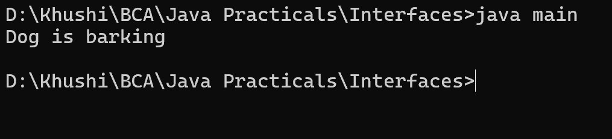

2. Write a java program to create a Animal interface with a method called speak() that takes no argumets and returns void. create a Dog class that implements Animal and overrides speak to print "dog is barking"
interface Animal{
void speak();
}
class Dog implements Animal{
public void speak(){
System.out.println("Dog is barking");
}
}
class main{
public static void main(String st[]){
Dog obj = new Dog();
obj.speak();
}
}
